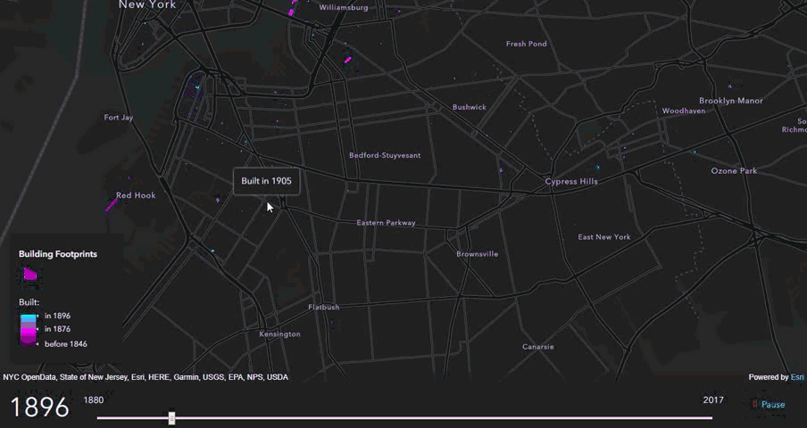

自然環境
この写真は中国四川省の九寨溝である。九寨溝（きゅうさいこう）は中国四川省北部のアバ・チベット族チャン族自治州
九寨溝県にある自然保護区であり、ユネスコの世界遺産（自然遺産）に登録されている。

自然災害
2017年インドネシア・バリ島の活火山アグン山で大規模な噴火が起きた。
アグン山から上がった黒煙は頂上から最大3400メートルの上空まで到達した。

地図
この地図は、2012年にNASAによって作成されたナイトライトマップである。

GIS
この地図は、137年間のニューヨーク市の開発の変遷を示した電子地図である。
本アプリは、高校地理教材補助的なアプリです。紙地図からデジタル地図に代わることによって、すなわち地理情報システムをベースに行われるようになった。さらに、地理空間情報社会の到来と言われる現在、GISを利用した地図の活用能力を育むことが求められることを目的としたものです。
·本ソフトで、衛生画像、地形断面図、鳥瞰イメージなどを提示し、地形の実感的、視覚的理解を支援する。
·過去地震·洪水·火山噴火などの被災地域、居住空間、土地利用などの数値情報を本ソルト上で重ね合わせて提示、分析することで、将来の自然災害に対して、防災·減災の方法を具体的に考える力を育て、地域のレジリエンスを理解させる。
·本ソフトの活用によって、事象の重ね合わせや空間分析を、ミクロからマクロまでの様々な空間スケールで提示し考察させることで、事象を分析的にみたり、俯瞰したりといった地理的見方·考え方を育てる。
研究代表者：
小口 高
© Csis - 本サイトに関するお問い合わせは
songjiali@csis.u-tokyo.ac.jp
までお願いします。